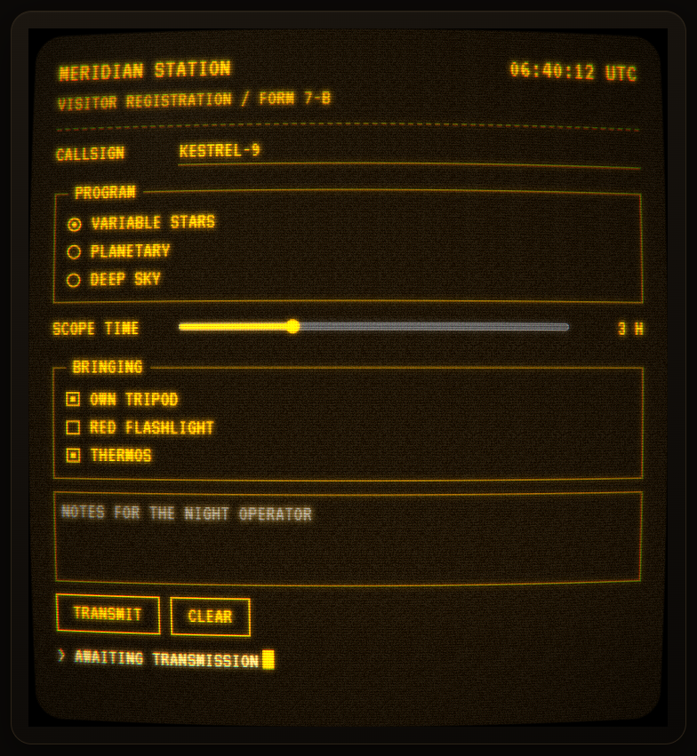

Explainer
HTML in Canvas, explained with Phosphor Form
Inspired by Felix Rieseberg's post of 15 November 2026 ("All hail the weird web"), in which he turned on HTML-in-Canvas in Claude's desktop apps and shared demos made with it. This page and the demo are a small experiment built from that idea.
HTML in Canvas is a proposed browser feature. It lets a page draw a live HTML element into a <canvas>, including text, form fields, and the text caret, and then treat the result as pixels: draw it, warp it, or feed it to a shader.
Phosphor Form is the demo on this page. It is an ordinary HTML form. A WebGL shader draws it as an old CRT screen. You can still click into the fields and type. The rest of this page uses Phosphor Form to show what the feature is and what in the demo makes it "HTML in Canvas".
Try it
This is the live demo. Open it on its own page. It shows the CRT screen only in a browser that has HTML-in-Canvas turned on (see "Support" below). Without it, the demo shows the same form with plain CSS scanlines, and a line of text says so.

Screenshot of the shader path, taken in Chrome 157 with the feature turned on.
The problem it solves
The canvas 2D API and WebGL draw pixels. Before this proposal, neither had a call that draws an HTML element. A page that wanted a text field inside a canvas had three options:
- Draw the text, the caret, the selection, and the focus ring by hand, and rebuild keyboard handling, IME input, and accessibility.
- Use a library that re-implements part of the browser's rendering from the DOM. The result differs from what the browser would draw.
- Place the real HTML next to the canvas and keep the two aligned. The canvas cannot apply a shader to it.
The WICG proposal adds a path from the browser's own layout and text rendering into the canvas. The proposal lists three goals among others: accessible interactive content in canvas, rich text in canvas, and HTML in a 3D scene.
The five pieces of the proposal
The WICG README (github.com/WICG/html-in-canvas) names five primitives. This table shows each one and where Phosphor Form uses it. Line numbers refer to docs/phosphor-form.html.
| Piece | What it does | In Phosphor Form |
|---|---|---|
content="drawable" on the canvas | Makes the canvas children real, laid-out HTML instead of fallback content. | Line 119: <canvas id="crt" content="drawable" layoutsubtree>. The older layoutsubtree attribute stays for older builds. |
drawable on a child | Marks which child can be drawn. | Line 120: <form id="form" drawable>. The whole form is one drawable element. |
paint event and requestPaint() | Tells the page when the HTML changed, so the page can redraw. | Line 293: the paint handler copies the form into a texture. Typing, the blinking cursor, and the clock each trigger it. Line 298 wraps requestPaint(), and the resize code calls it (line 309). |
Draw call: drawElementImage (2D), texElementSubImage2D (WebGL), drawElementImageToTexture (WebGPU) | Copies the latest snapshot of the element into the canvas or a texture. | Line 273: gl.texElementSubImage2D(gl.TEXTURE_2D, 0, 0, 0, form). This is the WebGL variant. |
updateElementGeometry | Tells the browser where the element was drawn, so mouse hits and accessibility match. | Line 290: called with an identity transform. With a WebGL canvas the page must call it, because the browser cannot know the layout of the texture on screen. |
How a keystroke reaches the shader
What makes Phosphor Form "HTML in Canvas"
Three facts, each testable in the demo:
- The form is real DOM, not a picture of one. Click CALLSIGN and type. The browser handles the caret, selection, Backspace, and Tab order. The radio buttons, checkboxes, range slider, and textarea are native controls. The page contains no code that draws a text field.
- The browser's own renderer makes the pixels. The VT323 font, the dashed lines, and the checked-box styling come from ordinary CSS (
#formrules in the page). The canvas receives a snapshot of that rendering. - The pixels reach a shader as a texture. The shader (lines 200 to 236) bends the image, shifts the red and blue channels, adds glow, scanlines, a phosphor stripe mask, and static. A normal DOM page cannot do this to a live form. The sliders under the screen change those shader settings while you type.
What does not count
- A CSS filter or overlay on a div. It can add scanlines, but not curvature with per-channel colour fringing, and not a custom fragment shader.
- A canvas that draws text with
fillText. The page would have to rebuild the form controls itself. - The fallback in the same file. If the browser has no HTML-in-Canvas,
phosphor-form.htmlmoves the form out of the canvas (line 191) and shows it with CSS scanlines. That is the same form without the feature. Comparing the two views shows what the API adds.
Where the API is still rough
The proposal is experimental, and the call names changed while I built the demo. These are the problems I met, in order. Each one is fixed in the current file.
| Symptom | Cause | Fix |
|---|---|---|
TypeError: texElementImage2D … not of type (Element or ElementImage) | The first version used the older texElementImage2D call form. The current spec uses texElementSubImage2D, content="drawable" and the drawable attribute. | Use the current names. Keep the older calls as fallbacks (lines 264 to 277). |
canvas.getElementImageDefaultSize is not a function | One Chrome build has texElementSubImage2D but not this size helper. | Use the canvas size when the helper is missing (line 268). |
Screen shows only static, no form. gl.getError() returns 1281 (INVALID_VALUE). | getElementImageDefaultSize returned a height of 779.58. The texture was 779 pixels high and the 780-pixel copy failed without an exception. | Round the size up with Math.ceil (line 268). |
| Clicks land a few pixels off at high curvature. | The browser hit-tests the form at its layout position. The shader bends the drawn image. | Not fixed. The page says so. Keyboard focus is exact. |
The page counts a missing paint event or a failed upload as an error and prints it under the sliders after 2.5 seconds. That line found the first three problems.
Support and how to see the shader
- Claude desktop app: Felix Rieseberg's post says he enabled the feature there. My own test of this page used a separate Chrome, not the app viewer.
- Chrome: open
chrome://flags/#canvas-draw-element, set it to Enabled, and restart. - What I tested: Chrome 157 (headless) started with
--enable-experimental-web-platform-features --enable-blink-features=CanvasDrawElement. The form showed, typed text appeared on screen, and the curvature slider changed the screen shape. I did not test other browsers.
Known issues
- One report: in the Claude desktop app viewer, the CALLSIGN field accepted only 4 letters. I typed 12 letters in Chrome 157 at 900 and 420 pixels width and all were accepted, so I could not reproduce it. The cause is unknown.
- The other sliders, the Bypass button, TRANSMIT, and touch input have no automated test.
- The API is a proposal. Names and signatures can change again.
Sources
- Felix Rieseberg, post on X, 15 November 2026: @felixrieseberg.
- WICG HTML-in-Canvas proposal and examples: github.com/WICG/html-in-canvas. The five pieces above and the WebGL call sequence come from its README and its
Examples/webGL.html. - Code for this demo: github.com/az9713/claude-html-in-canvas-demo.